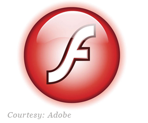

A Short History of Flash (how I saw it)
One reason why I'm curious about HTML5 is because of Apple's issues with the Adobe Flash web animation program.
About a year ago from this post, Steve Jobs called Flash a "memory hog" and stated that Apple wouldn't support it on either the iPhone, iPad or iPod Touch. He said that these devices would instead use HTML5 and Quicktime to display video, even though Flash is the unspoken web video standard.
Steve said this at a time when it looked like the iPhone would rule the smartphone market for awhile and the iPad would be the cool new gadget everyone wanted. It's a year later and the iPhone is losing market share to Google's Android while the iPad is "cool," but not as "cool" as Apple thought it would be.
 This isn't all because of Apple's lack of Flash support for its products, but it's partially due to it. They may know this and the fact the Flash-ready Sky Fire web browser the Flash-ready Sky Fire web browser can be installed on the iPhone and iPod Touch could be a sign that they're rethinking their position.
Flash is how I got into this business so it will always be close to my heart. The Apple stuff made think about how far Flash has come and from my point of view, it's come a long way.
The Beginning
(Disclaimer: I wasn't there for Flash's beginning and don't claim to be a Flash guru like Colin Moock, but I was there a little before it got big and can more than get the job done with the application).
Flash is the brainchild of software developer Jonathan Gay. He started out designing computer games and eventually created a pen-powered graphics program called SmartSketch which eventually migrated into FutureSplash, a full-fledged web animation program.
FutureSplash gained enough high-profile customers, like Disney, to gain the attention of a California-based graphics software company called Macromedia, who already had a web animation program called ShockWave. But they felt that FutureSplash had promise so they brought the application's parent company in 1996 and renamed the application Flash.
The Big Moment
Flash versions 1 through 3 required that web designers create almost all their animations by hand with a mouse. You could use light scripting commands to start and stop animations, but not much else.
All that changed in 1999 when Macromedia bundled ActionScript 1.0 with Flash 4. ActionScript was a full programming language that allowed for the creation of extremely complex web animations within Flash. Plus, it allowed Flash to communicate with backend database setups like MySQL and Java, meaning that data could easily pass to and from a Flash site: you could create the coolest looking e-commerce site in Flash if you wanted to.
Thanks to ActionScript, Flash showed the world how limitless web design was and it caused a design movement as revolutionary as Bauhaus (it didn't tick people off like Bauhaus did, but it caused a revolution anyway). A lot of great web design agencies spurred the Flash revolution, including Balthaser, WEBAGENT007, the highly influential 2Advanced and the now defunct, extremely arrogant Kioken Studios. A website designed in Flash cost double the price of one that wasn't, and people paid the money anyway. Flash sites were everywhere.
The Problem
Flash sites looked good but had a weakness: the content within them couldn't easily be found by search engines. The engines could find a site that used Flash, but not copy and images within it.
This wasn't a big deal when Yahoo! and Alta Vista were the main search engines: they found and ranked sites using many other factors besides content. But when Google became the main search engine, they deemed it that sites with the best content got the best ranks. Thankfully, they provided web developers with all sorts of information on how to get good rankings: utilizing this info on your site didn't guarantee you good rankings, but it upped your chances.
Google clearly stated that Flash didn't raise your chances, it lowered them. Web designers followed suit. Less Flash sites were created resulting in less commercial sales of Flash. Many developers were now buying the program to create browser-based video games so Macromedia survived, but they still took a small financial hit.
The Big Moment, Part II
Meanwhile, cable and fiber optics were bringing super high-speed internet connections to homes. This allowed for large files to be transmitted over the web at a faster rate.
Online video streaming benefited the most from super high-speed internet connections, or broadband. But what type of video was the best for web use? Apple wanted people to use their QuickTime format while Windows Media was being promoted by its owner, Microsoft. There were other video formats out there, all being promoted by their respective owners.
Flash solved this problem by presenting the FLV format to the public in 2003. Someone could now import almost any type of video into Flash and with a click a few buttons, an FLV would come out.
The FLV was flexible: it was a video file that displayed in any type of web browser that supported Flash, which all of them did. Macromedia increased the flexibility by licensing the FLV to other software developers, meaning that you didn't need to buy Flash to create an FLV. You could used one of the many cheaper alternatives that came about.
I'm of the opinion that at this point, Adobe had seen enough. Macromedia had always been their main competitor in the graphics software field, but the overlap was small. Macromedia's most successful products were the ones geared towards web programmers, like web design program Dreamweaver and the ColdFusion database platform, while their graphic design products were just okay. It was the reverse with Adobe: their PhotoShop, Illustrator and InDesign products were standards in the design world but their one web design tool, GoLive, was a bust.
With Flash, Macromedia was showed that they could create products that appealed to both web designers and< programmers. Factor in the creation of the FLV (which made Macromedia tons of money in licensing fees) and Adobe had more than enough inspiration to buy Macromedia, which they did in December 2005 for roughly $3.4 billion. It paid off in the end as YouTube was up and running at the time and were using the FLV format for video. Other online video sites like Hulu and Google Video, followed suit, resulting in more FLV licensing fees.
Which brings us to today. Thousands are still using FLVs despite Steve Jobs' statements, but YouTube's slowly utilizing HTML5 video. There are less Flash sites out there, but not that much less. And Flash is still a great online game development platform.
HTML5's video format (OOG) is free from license, as are the tools to create them. So it may beat Adobe in the online video arena (one reason why I'm getting into HTML5). But history has proven that Flash can weather the punches and change to meet the needs of the times. I think it will be fine.